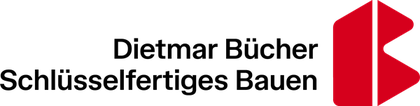
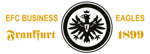
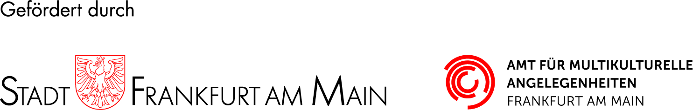
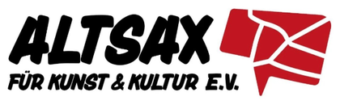
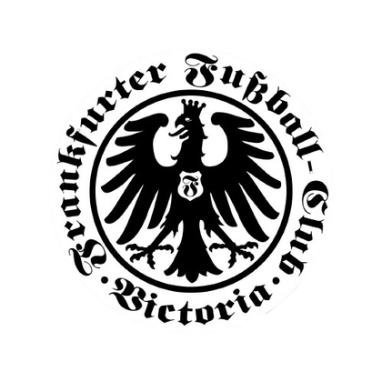
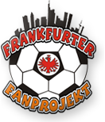
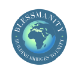

Dietmar Bücher
Schlüsselfertiges Bauen

Unternehmen, Einrichtungen und Stiftungen können unsere Arbeit mit Geld-, Sach- oder Projektspenden unterstützen.
Um unsere Bildungs-, Sport- und Sozialprojekte in Gambia weiter auszubauen, sind wir auf Geld- und Sachspenden angewiesen. Jede Unterstützung trägt unmittelbar dazu bei, Kindern und Jugendlichen bessere Zukunftschancen zu eröffnen und internationale Gesinnung sowie Völkerverständigung mit Leben zu füllen.
Wir freuen uns besonders über Partnerschaften mit Unternehmen, staatlichen Einrichtungen und anderen Stiftungen. Gemeinsam können wir langfristige Wirkung erzielen und Projekte realisieren, die ohne starke Partner nicht möglich wären.
Unternehmen und Einrichtungen, die unsere Projekte mit Geld-, Sach- oder Projektspenden tragen.
Schlüsselfertiges Bauen

EFC Business Eagles Frankfurt 1899

Amt für multikulturelle Angelegenheiten
Stadt Frankfurt am Main

Vereine und Initiativen, mit denen wir in Frankfurt und Gambia zusammenarbeiten.



